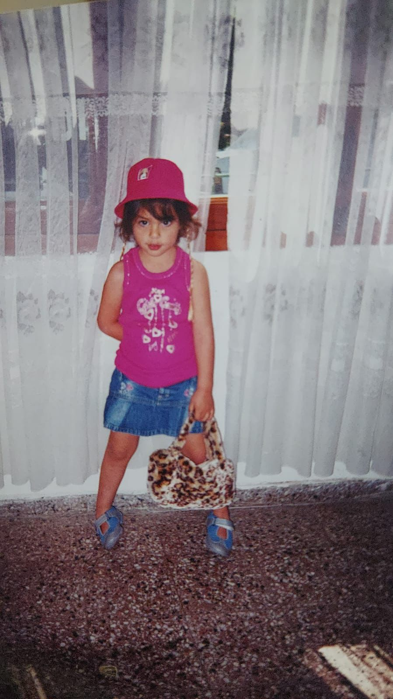
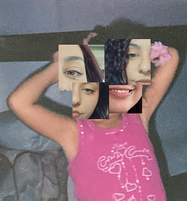
Soy Lara, tengo 22 años y vivo en La Plata, aunque siempre fui del partido costa. Soy estudiante avanzada de Diseño Multimedial en la UNLP.
Me considero bastante híbrida: me gusta moverme entre lo visual y lo técnico sin quedarme en un solo lugar. Algo que me define es que, si hay algo que no sé, no me frena: lo aprendo. Soy curiosa por naturaleza y muchas veces termino resolviendo cosas después de bastante prueba y error (y alguna que otra trasnochada).
Disfruto trabajar en equipo, intercambiar ideas y ver cómo algo que empieza medio caótico termina tomando forma.
Y casi siempre estoy acompañada por mi perro salchicha, que está presente en todo lo que hago.
Trabajo con Unity, C# y web para crear juegos y experiencias donde el usuario no solo mira, sino que participa.
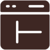
Armo interfaces en Figma, pensando en que sean claras, intuitivas y que se sientan bien de usar.
Me interesa conectar lo físico con lo digital, combinando hardware y software en proyectos interactivos.
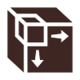
Modelo y diseño elementos en 3D y gráfica digital para construir mundos y piezas visuales.
Concepto, desarrollo y dirección creativa de KORBAN CLUB, una macromarca digital creada para unificar cuatro marcas de ropa urbana bajo una misma identidad.
El proyecto surge ante una necesidad concreta: visibilizar que Osher, Iker, Barak y Kadosh forman parte de un mismo sistema. En lugar de comunicarlo de forma directa, se construyó una narrativa que lo sugiera: la idea de “club”, donde cada marca funciona como una pieza dentro de un universo mayor.
La estrategia de lanzamiento se pensó desde una lógica musical, trasladando códigos culturales al entorno digital. Cada marca se presentó como una canción, dentro de un EP. Mientras que KORBAN se posiciona como el “EP”, funcionando como contenedor y eje conceptual del sistema.
A nivel visual, el proyecto combina estética urbana con recursos digitales contemporáneos, incorporando modelos generados con inteligencia artificial y piezas diseñadas para redes sociales. El objetivo fue construir una identidad que no dependa únicamente de la prenda, sino del imaginario que la rodea.
Mi rol abarcó la conceptualización del sistema de marca, el desarrollo de la narrativa, la dirección estética y la producción de contenido, trabajando en conjunto con el equipo para mantener coherencia entre las distintas piezas y plataformas.
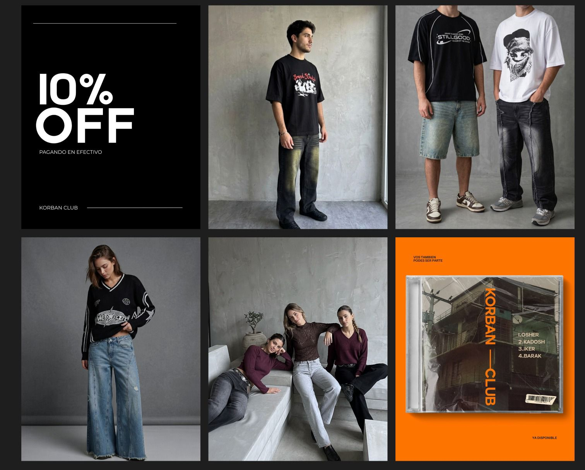
VER MÁS PROYECTOS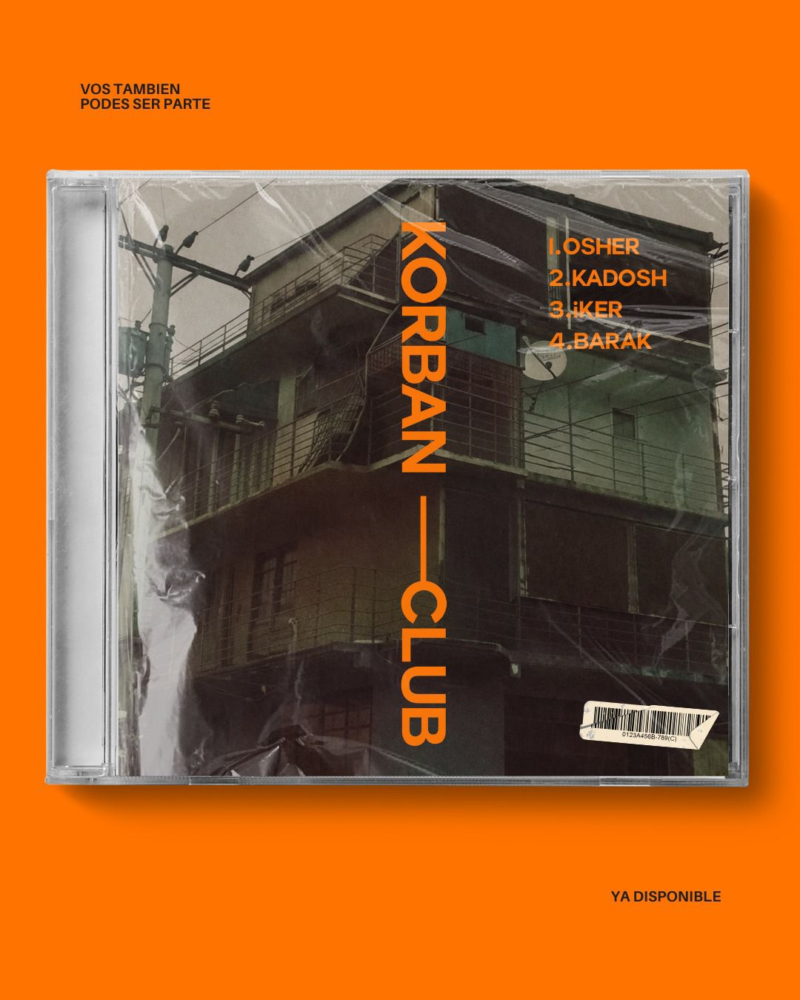
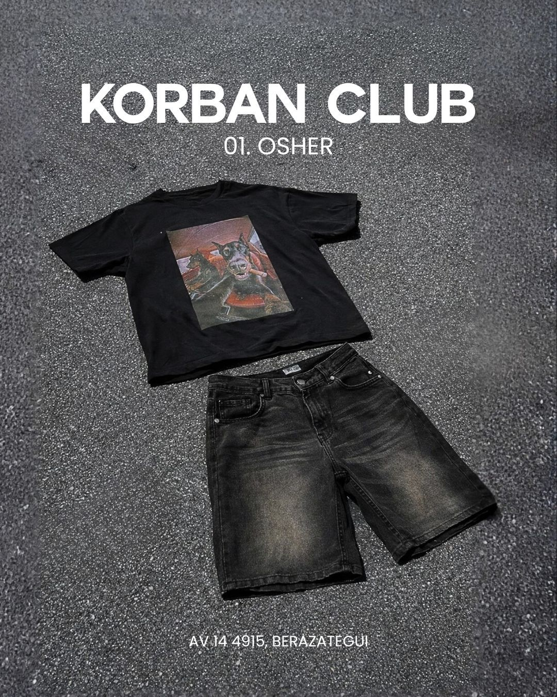
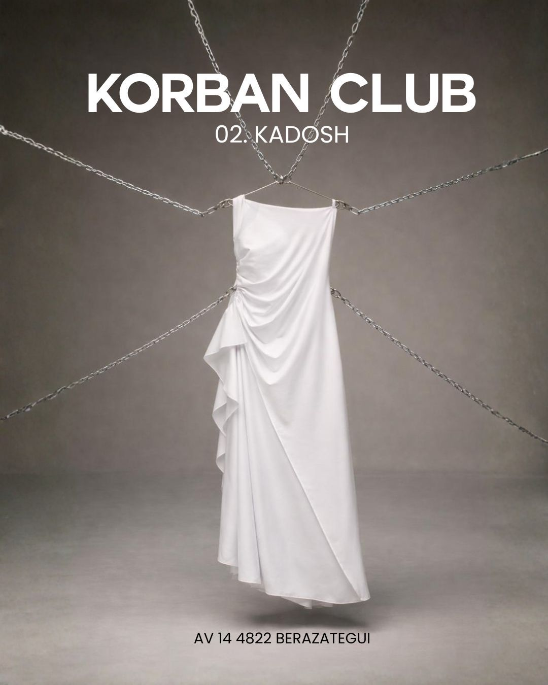
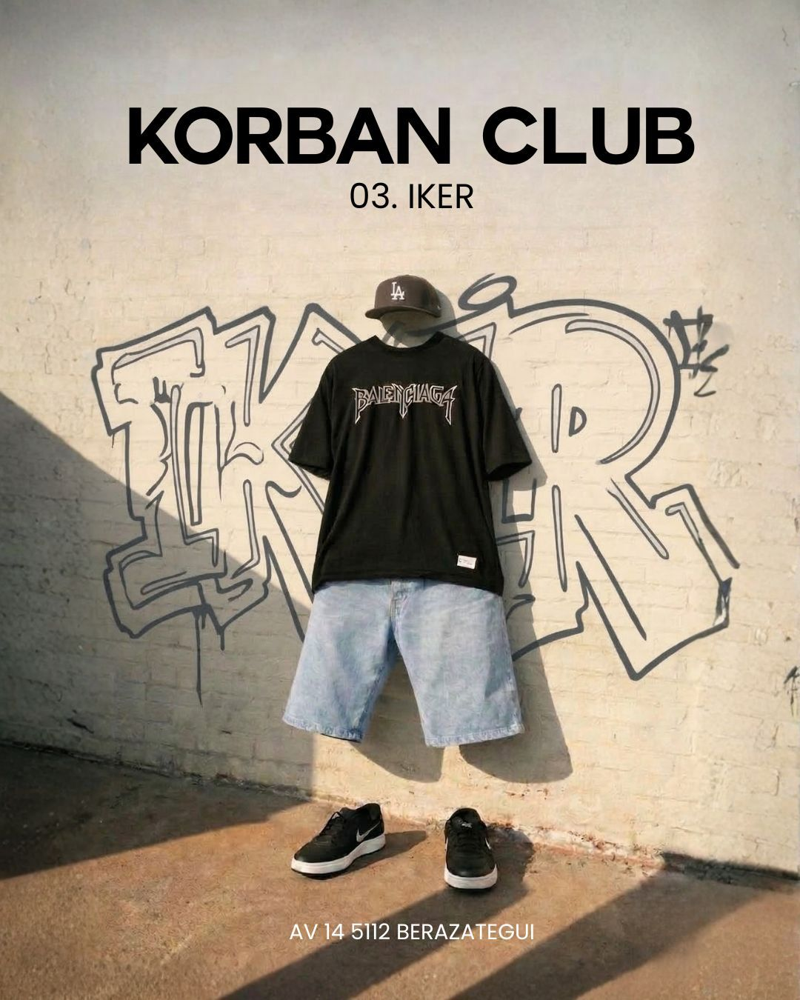
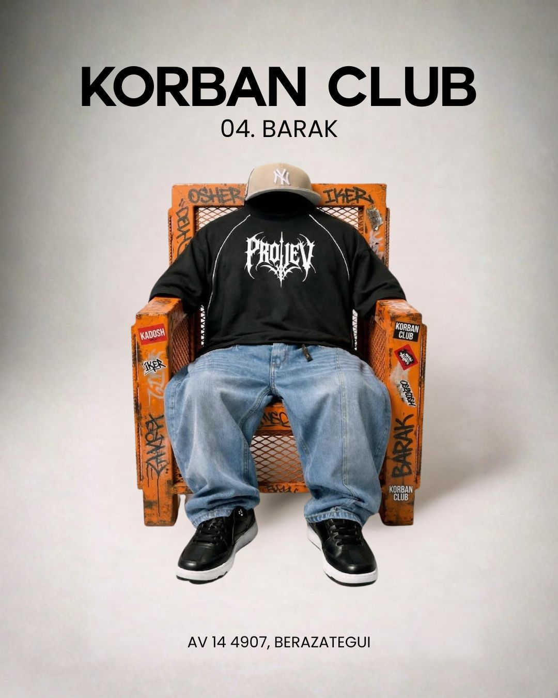
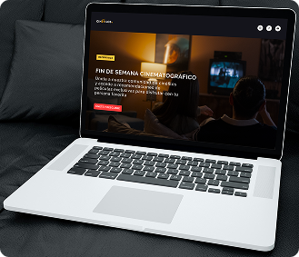
Landing page responsive para Cinéfilos, un medio digital sobre cine, pensada desde una estética minimalista y visualmente atractiva. El proyecto abarca desde la investigación y el diseño UX/UI hasta el desarrollo web, con el objetivo de ofrecer una experiencia simple, dinámica y alineada a un público que busca entretenimiento.
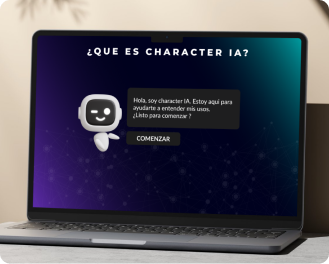
Infografía interactiva sobre Character AI, presentada como una simulación de chat tipo WhatsApp para hacer la experiencia más cercana e inmersiva. A través de distintos personajes, el proyecto explora qué es la plataforma, cómo se usa y sus pros y contras, combinando diseño, contenido y desarrollo web para lograr una navegación dinámica y clara.
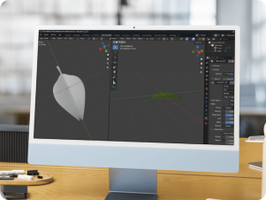
Experiencia de realidad virtual desarrollada en equipo, donde el usuario interactúa con el entorno a través del movimiento físico y un sistema de control desde el celular. Mi rol principal fue el modelado 3D en Blender, creando elementos del entorno, aunque también colaboré en programación en Unity, integración hardware/software y la lógica interactiva para lograr una experiencia inmersiva y dinámica.
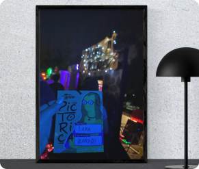
Juego multijugador desarrollado en Unity como primer proyecto fuerte de programación, donde dos jugadores compiten en un duelo musical con guitarras físicas. Me encargué de la lógica principal, mecánicas, sistema de puntaje y eventos especiales, además de los estados de pantalla e integración de assets. Fue una experiencia clave para afianzar mis bases en C# y trabajo en equipo.